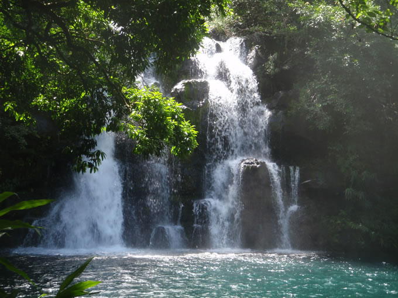

Located in the South East of the island, Eau Bleue is a waterfall situated in a small village called Cluny. Barely 10 minutes going down the road to Midlands, this stealthy place resides amongst sugarcane fields and shady forest.

Eau Bleue, also known as Cascade Rama (J. Jaddoo) is named after the turquoise water in its pond hence, Eau; Water, Bleue; Blue. The place consists of around 5 waterfalls ranging from 5-8 metres. In summer, the water is so clear that you can actually see the complete ecosystem underneath.
During the last five years, Eau Bleue has become prominent. Before, it was known as the secret pool for mostly the resident of Cluny. Now, it is a well visited place by both the locals and as well as the tourists. There has been a shift from being a deserted place to a weekly spot for people looking to be lured out by both vegetation and positive energies.
However, beside from being a relaxation spot, Eau Bleue has become a place where many companies organise outdoor activities like diving, canoeing or even sun-bathing.